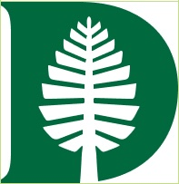

Pratap Luitel
People leader with a love for infrastructure and scale.
Colby College
BA · Mathematics
2014
Colby College
Studied Mathematics in a rich liberal arts environment. It is where I fell in love with prime numbers and infinities. Concepts that are simple to state and endlessly deep to explore. That sense of wonder has never really left me.

Dartmouth College
BE · Computer Engineering
2015
Dartmouth College · Thayer School of Engineering
Earned a BE in Computer Engineering at one of the country's top engineering schools. Dartmouth is where I started appreciating the art of end to end ownership, taking an engineering system from idea all the way through to something real and delivered.
Alarm.com
Software Engineering
2015 – Present
Alarm.com
Joined right out of Dartmouth in 2015 as a Software Engineer. Over the next few years I organically transitioned into building the Infrastructure and SRE team from the ground up, defining the on-call model, incident process, and culture of ownership as I went. Since 2020 I've led that team, supporting ~10 million security cameras across ~5 million customers worldwide. We've scaled on-prem and Azure infrastructure across international regions through 100x product growth while maintaining 99.99% uptime, as the company grew from $100M to ~$1B in revenue and the Video org scaled from 10 to 100 engineers.
Stanford GSB
LEAD
2026 – 2027
Stanford Graduate School of Business
Accepted into Stanford's LEAD executive program to build the business fluency and cross-functional vocabulary to think about the fuller shape of a company, not just the infrastructure layer underneath it. Also sitting with a question I keep circling back to: how to keep building profitable businesses while still leading authentically, without treating the two as being in tension.
 Brunnian Theta Graph
Brunnian Theta Graph
 LinkedIn
LinkedIn
Piano
Picked up piano as an adult beginner. No grand ambitions, just enjoying working through scales and simple pieces one evening at a time.
Biking
Long rides with no particular destination. One of the few times my head actually goes quiet.